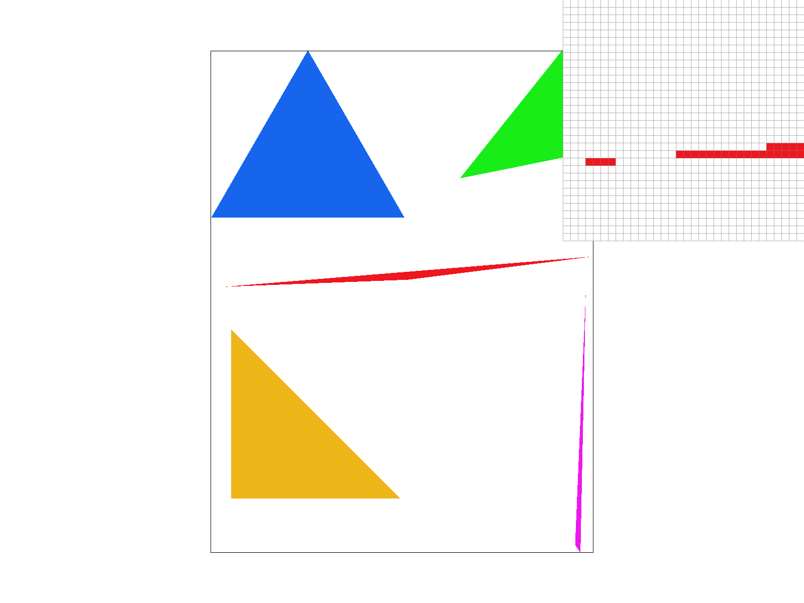
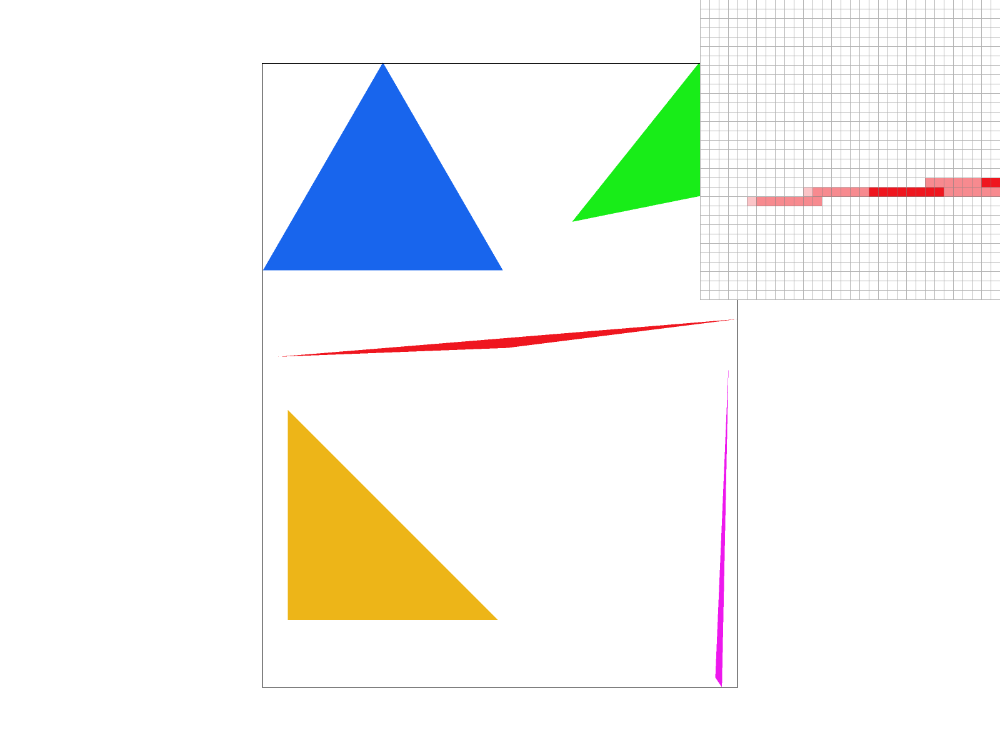
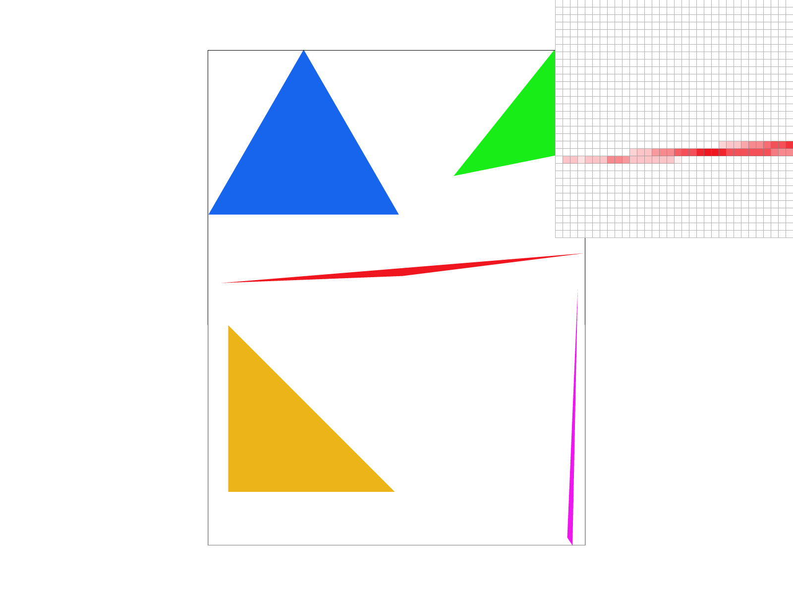
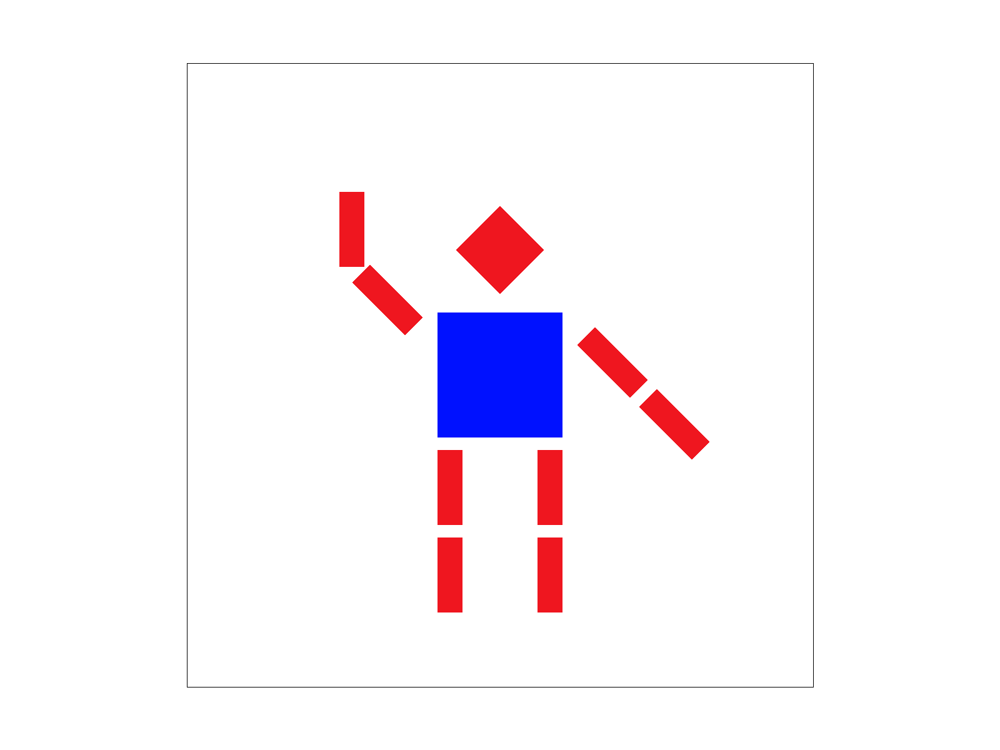
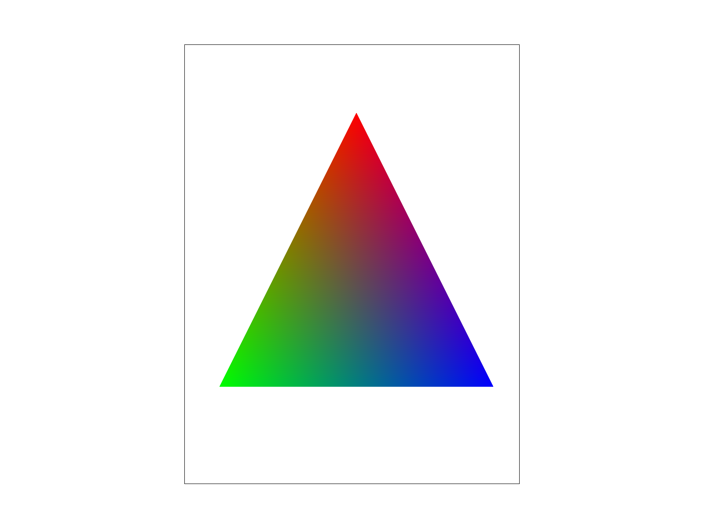
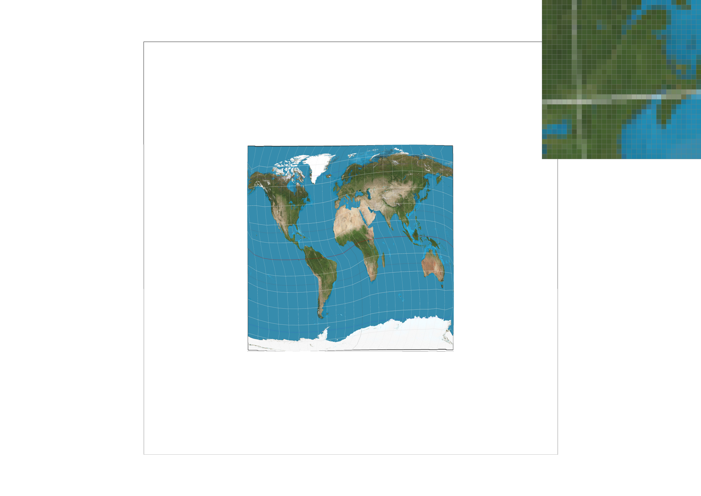
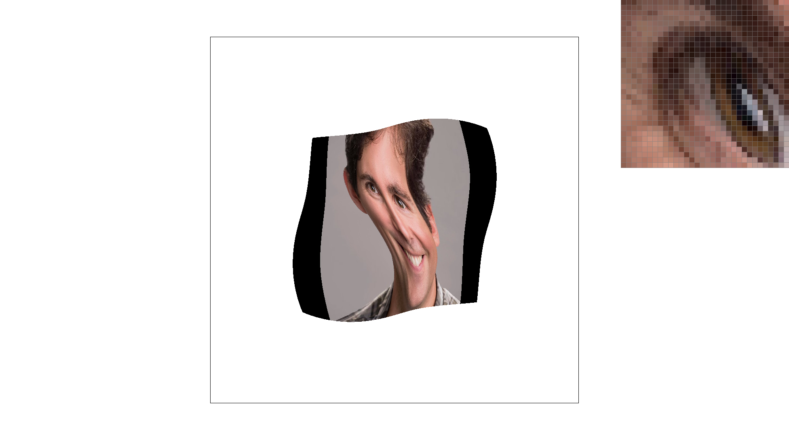
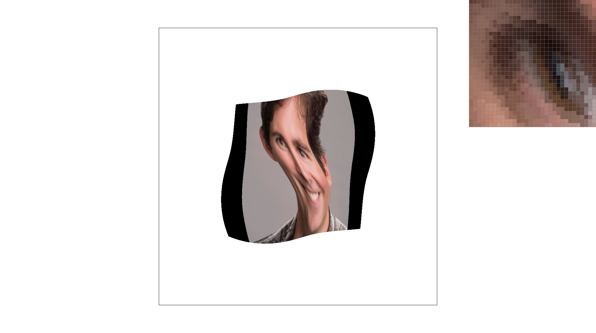

Overview
In this project, I started by performing point-in-triangle tests to rasterize simple single-colored triangles, then I practiced the simplest anti-aliasing schemes such as supersampling, and eventually, with the help from barycentric coordinates, I learned more sophisticated anti-aliasing methods like pixel sampling and level sampling. As the end result, I was able to map textures to geometries and rasterize them to be displayed on screen, plus doing some anti-aliasing processing to improve image quality. This project lets me practice doing texture mapping and anti-aliasing with my own hands, which I thought was super cool because I've always been very familiar with their applications in real life, but was never able to use them myself, let alone building them from scratch. A interesting fact is that, before, I thought supersampling is more or less the only way to avoid aliasing, but here I learned about many other schems such as level sampling and mipmaps, which I think are brilliant ideas since they are surprisingly effective.
Section I: Rasterization
Part 1: Rasterizing single-color triangles
I start by bounding the triangle using the min/max of {x0, x1, x2} and the min/max of {y0, y1, y2} so that I don't have to sample the entire framebuffer. I then tested the position of point2 relative to point0 and point1; if point2 is on the left of the point0-point1 vector, then the ordering of the vertices is counter-clockwise, otherwise the ordering is clockwise. According to the ordering, I performed the point-in-triangle test as introduced in lecture, where I check for >=0 in the counter-clockwise case and <=0 in the clockwise case. Thus I can make sure that I rasterize the points that lay exactly on the edge of the triangle. Lastly, for the sample points that are inside the triangle, I called fill_pixle on the floor of the x and y values.
At the beginning of the function, I bounded the range of my sample points to be no smaller than the minimum of any x y values, and no larger than the maximum of any x y values, therefore I don't sample any point outside of the bounding box of the triangle.
Part 2: Antialiasing triangles
Supersampling lets one more accurately determine the location of an edge and the proportions of different colors in a single pixle, thus it is very useful in creating a smooth transition between colors.
I used the standard supersampling algortihm here; that is, I performed the point-in-triangle test on more points than the number of pixels, and for each pixel being displayed, I took the average of all sample points corresponding to that pixle. In this process, I had to use a data stucture to store the sample points, for which I used sample_buffer to store a 1-D representation of the supersampled image that is many times the size of the original.
To implement supersampling, I modified rasterize_triangle to sample at more points, and I also modified resolve_to_framebuffer to downsample sample_buffer back to the number of real pixles in the framebuffer. The downsampling method is described earlier.
|

|

|

|
Observe that, as the sample rate goes up, the trasition between the tip of the triangle and the white background becomes more and more blurred, this is because supersampling produced many red-ish pixels in places where regular rasterization struggles to decide accurately. In other words, while regular rasterization can only assign a pixel to be (in this case) either white or red, supersampling is able to assign ambiguous pixels a color somewhere in between white and red.
Part 3: Transforms
For my_robot.svg, I changed the color of his body to blue, and made him wave his right hand.
Section II: Sampling
Part 4: Barycentric coordinates
Barycentric coordinates describe the position of a point in a triangle using the relative distance from the point to the three vertices of the triangle. As seen below in the triangle with color gradients, for any given point in the triangle, the distance from it to the top vertex (red), left vertex (green), and right vertex (blue) determines the color composition of that point. The closer a point is to a vertex, the more color of that vertex the point will have.

|

|
Part 5: "Pixel sampling" for texture mapping
Pixel sampling is used when mapping a picture to a space with a different pixel density, where the pixels of the source and the destination don't line up in a one to one manner, so we need to develop a scheme to pick a reasonable color for the pixel. In my implementation, I calculated alpha, beta, and gamma for the barycentric coordinates in screen space, and used them to calculate (x,y)'s corresponding point (u,v) in the texture space. Lastly, I sampled the texture space at (u,v) using one of the two sampling methods.
Nearest neighbor sampling simply picks the texel that is closest to the sampling point, while bilinear interpolation produces a weighted average of the four texels surrounding the sampling point.
|
|

|
|
|
|
As seen above, at the same sample rate, bilinear sampling produces a much smoother image with less aliasing than nearest sampling. This usually happens when there is a sudden change in colors (frequency is high), where nearest sampling is incapable of choosing a precise color since it can only select a pre-existing color rather than taking a bit from every surrounding texel.
Part 6: "Level sampling" with mipmaps for texture mapping
Level sampling is the technique where a texture image is stored in different resolutions, and a lower resolution copy of that image is said to be in a deeper level of the mipmap. When a the texture is mapped to a highly distorted area of the screen space (that is, when many texels map to the same pixel), a deeper level copy of that texture image is sampled to generate the correct color. In my implementation, I first calculated the level of mipmap I needed for a specific pixel, which isn't necessarily an integer. Then, if nearest sampling is specified, I would sample the nearest level of mipmap using a given pixel sampling method; if linear sampling is specified, I would sample the adjacent two mipmap levels using a given pixel sampling method, and take the weighted average of the two resulting colors.
Increasing the number of samples per pixel, or supersampling, is a highly effective way of anti-aliasing. But it is the most costly of the bunch since the number of operations grows rapidly, thus it runs slowly and needs a lot of memory space to store the samples. Level sampling is the second in terms of anti-aliasing power, and it runs fast since each pixel is sampled only once, even though there are some overhead with finding the correct level to sample from. Yet level sampling is not very memory-efficient since multiple copies of the texture image must be stored, albeit in decreasing resolutions. Lastly, pixel sampling has the worst anti-aliasing effect, but it is the fastest of the three since it has minimal overhead. It is also very memory-efficient as no additional data need to be stored other than the original texture image.
|

|
|
|
|

|
Section III: Art Competition
If you are not participating in the optional art competition, don't worry about this section!